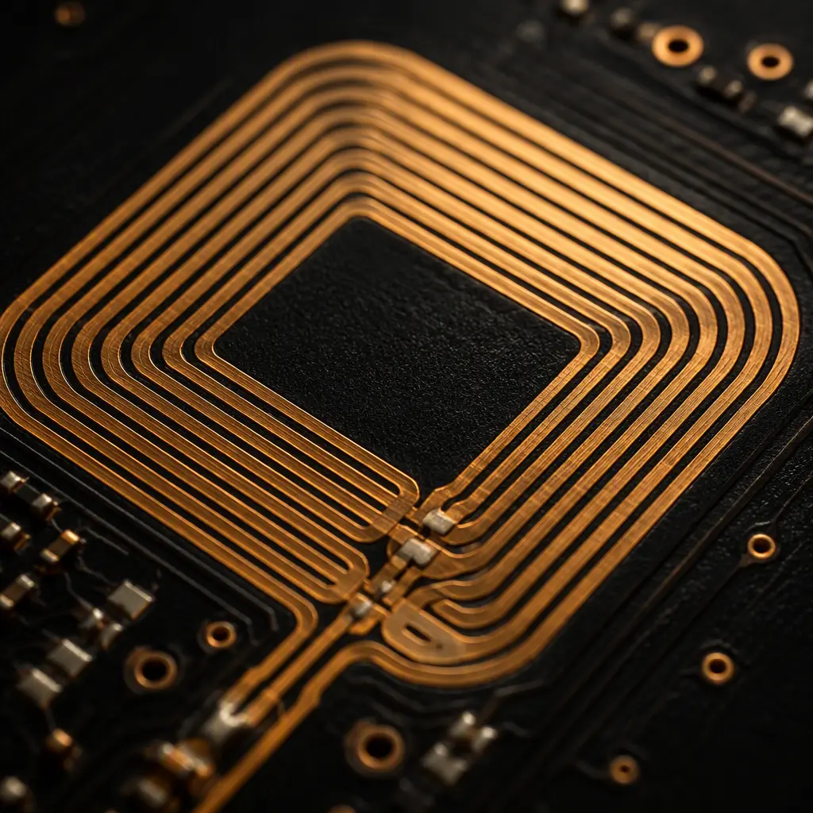
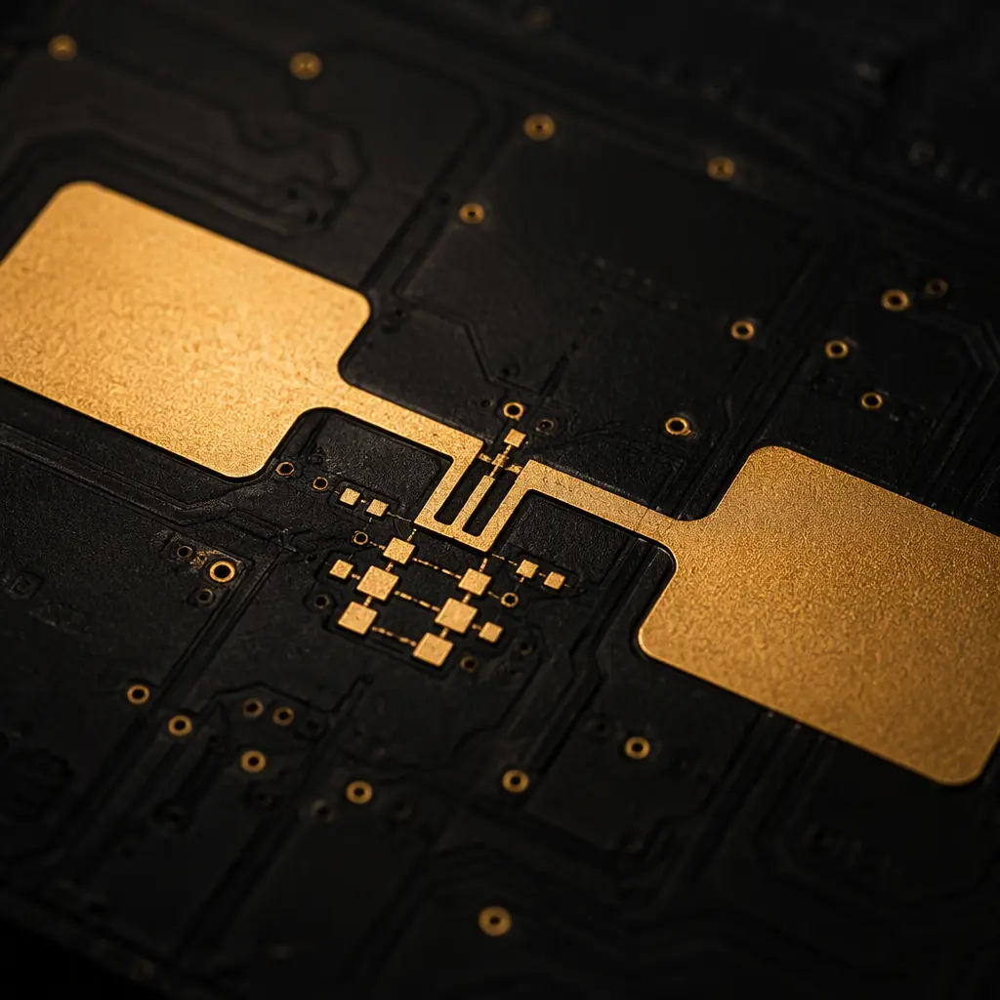
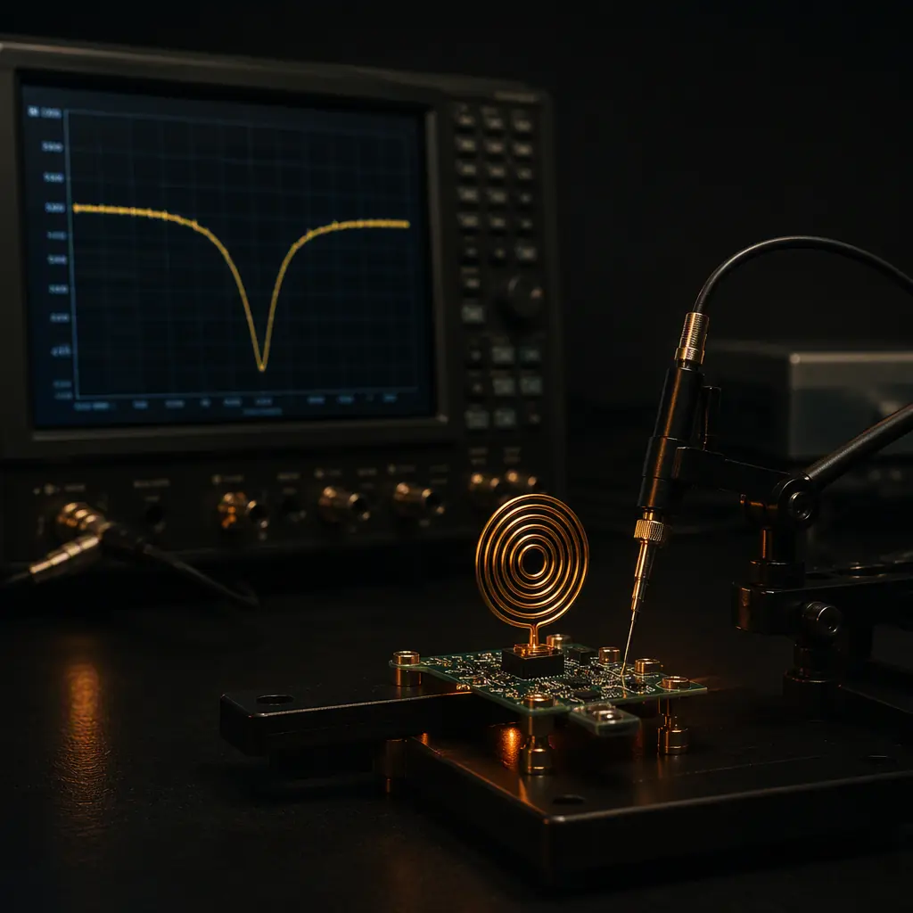

An NFC payment card, an RFID inventory tag, and a wireless charging pad all share the same physics: a coil or dipole antenna printed directly on the PCB, tuned to a specific frequency, and matched to a chip's impedance. The antenna is the part of the product users touch every day — and it is also the part most likely to fail silently: a tag that reads at 3cm instead of 10cm, a card that demagnetizes its own tuning, or a UHF label that works on one batch of boards and not the next. For hardware teams and procurement managers sourcing RFID and NFC antenna PCBs, the manufacturing tolerances matter more than the schematic: copper thickness, etch tolerance, solder mask, and material loss all shift the resonant frequency.
At Huaxing PCBA, we manufacture NFC antenna boards, RFID tag inlays on PCB, and combo antenna-plus-controller boards at our Shenzhen facility — with ±5% copper etch tolerance, controlled impedance, and RF testing on antennas. Here is what you need to specify for antenna PCBs that work on the first production run.

HF NFC Coil Antennas: Turns, Inductance, and the Tuning Equation
HF RFID and NFC operate at 13.56 MHz using a resonant coil antenna. The tag chip presents a capacitive load, and the antenna coil is tuned to resonance with a parallel capacitor (either discrete or, in tuned designs, the chip's internal capacitance). The resonant frequency is set by the classic equation f = 1/(2π√(LC)), so the manufacturing variables are the ones that change L and C:
Coil Geometry: Turns, Trace Width, and Gap Set the Inductance
A typical NFC antenna on a 25×40mm card uses 4–6 turns of 0.2–0.5mm trace with 0.2–0.4mm spacing, producing 1.5–3.0 µH inductance. Inductance scales with the square of turns, so a ±10% etch error on trace width changes inductance by roughly ±5% — which shifts resonance by ±2.5%. Specify copper etch tolerance of ±5% (better: ±10µm absolute) on antenna layers, and keep the coil on a single layer with a clean ground keepout beneath it. Our copper weight guide explains how 1/2oz vs 1oz copper affects etch precision.
Q Factor and Read Range: The Trade-Off Nobody Puts on the Drawing
Read range is proportional to antenna Q (quality factor), but a Q that is too high makes the tag sensitive to detuning from nearby metal or the reader's field. Typical NFC tag Q is 15–30. Q is set by copper losses (thin copper = lower Q), solder mask over the coil (lossy mask lowers Q), and the tuning capacitor's ESR. If your tag reads short, the first suspects are copper weight (use 1oz, not 0.5oz, for the coil) and solder mask covering the coil traces. Our RF PCB guide covers loss mechanisms in detail.
Tuning Pads: Design for Post-Assembly Adjustment
Board material, solder mask, and nearby components all shift resonance by 1–3% from simulation. Production NFC antenna PCBs should include tuning pads — small copper pads that can be trimmed or populated with a fixed capacitor to pull the resonant frequency back to 13.56 MHz ±1%. Specify a tuning procedure in the assembly instructions: measure resonant frequency, then adjust the pad capacitor. Our testing methods guide covers the RF measurement workflow.
Procurement Insight: When quoting NFC antenna PCBs, ask the supplier for their etch tolerance on fine traces and their solder mask thickness control — not their layer count. A supplier who holds ±10µm etch and 10µm mask thickness will produce antennas that all resonate within ±1%; a supplier who doesn't will ship boards where every tag reads differently. The difference shows up as read-range consistency across a production batch.
UHF RFID Antennas: 860–960 MHz Dipoles and Matching Networks
UHF RFID (RAIN RFID) operates at 860–960 MHz using dipole-based antennas with a complex conjugate match to the tag chip's impedance — typically 10–30Ω real, −100 to −200Ω imaginary. The antenna design is an impedance-matching problem, and the PCB manufacturing tolerances directly change the match:
Dipole Length and the Dielectric Constant Effect
A half-wave UHF dipole on FR-4 is physically shorter than a free-space dipole because the substrate's dielectric constant (Er ≈ 4.2–4.5 for FR-4) slows the wave. The exact shortening factor depends on trace width, substrate thickness, and ground proximity — and it varies with material lot. Specify the laminate vendor and grade in the fabrication notes (e.g., Shengyi S1141 or equivalent) and verify resonance on first articles; a material substitution can shift the operating band by 10–20 MHz. Our materials guide compares FR-4 grades and their dielectric stability.
T-Match and Inductive Coupling: The Matching Network
Most UHF tag chips are matched using a T-match structure (a shorted stub across the dipole feed) or an inductively coupled loop. These structures are sensitive to trace width and spacing to within ±50µm. The matching section should be drawn with wide traces (0.5–1.0mm) where possible to reduce etch sensitivity, and the design should include a simulation-based tolerance analysis showing the expected S11 across the etch tolerance range. Our impedance control guide explains how to specify and verify the match.
Ground Planes Kill UHF Antennas: Keep Them Away
Unlike HF coils (which tolerate a nearby ground), UHF dipoles detune catastrophically when a ground plane is within 2–3mm. Specify a ground keepout of at least 5mm around the antenna area on all layers, and route all other signals on the opposite side of the board. If the antenna shares a board with a controller, put the antenna on a separate corner with a clear keepout — a common DFM failure is the fabricator adding ground copper fill under the antenna "to improve grounding," which destroys the read range. Our EMC compliance guide covers antenna-to-ground interaction.

Material and Finish Effects: What Actually Changes Resonance
Three manufacturing variables dominate antenna performance variation, and all three are under the fabricator's control:
| Variable | Effect on Antenna | Typical Tolerance | Control |
|---|---|---|---|
| Copper etch tolerance | Changes trace width → shifts L and resonance | ±10–20% (standard), ±5% (precision) | Specify ±5% on antenna layers; use 1oz+ copper |
| Solder mask thickness/loss | Adds dielectric loss → lowers Q and read range | 10–25µm | Mask over coil only where needed; specify mask type |
| Laminate Er tolerance | Changes electrical length → shifts operating band | ±0.2 (FR-4), ±0.05 (RF-grade) | Lock laminate vendor/grade; RF-grade for UHF |
| Surface finish | ENIG adds nickel loss; immersion silver lower loss | — | HASL/enig acceptable for HF; consider silver for UHF |
The practical rule: HF (13.56MHz) antennas are forgiving — a ±5% etch shift changes resonance by ~2%, usually within the tag's bandwidth. UHF antennas are not — the same etch tolerance can move the match point out of the band entirely. If your product is UHF, budget for RF-grade laminate (Rogers 4003, Megtron 6, or at minimum a tightly-spec'd FR-4) and a first-article RF test. Our laminate selection guide details the material options for RF boards.
Key Takeaway: The cheapest way to make RFID/NFC antenna PCBs consistent is to control the three variables above in the fabrication drawing — etch tolerance, solder mask, and material grade. Doing this costs nothing on the PO, but it converts a "works sometimes" antenna into one that reads the same on every unit.
Combo Boards: Antenna Plus Controller on One PCB
Many IoT products integrate the NFC reader/writer controller and the antenna coil on a single board. The integration challenge is isolation: the controller's digital noise and power switching can detune or desensitize the antenna just millimeters away.
Physical Separation and Ground Isolation
Keep the antenna coil at least 10mm from the controller and switching regulators, with a ground guard trace around the coil and no copper fill inside the coil's inner area. The coil's return path must be a dedicated trace back to the controller's RF pin — never a shared ground pour. This is the most common layout mistake in combo NFC boards. Our mixed-signal design guide covers the partitioning rules.
EMI from the Buck Converter: The Silent Detuner
An NFC reader draws 100–300mA during card polling, and the switching regulator's ripple at 1–3 MHz can intermodulate with the 13.56MHz carrier, reducing read sensitivity. Specify a low-ripple regulator (or LC filter) on the RF supply, and keep the switching node away from the coil. Request EMI pre-scan data on first articles if the product must pass FCC/CE. Our EMI/EMC design guide covers filtering and layout for RF systems.
Edge Plating and Castellated Half-Holes for Module Antennas
If the antenna board ships as a module (e.g., a Bluetooth/NFC module with antenna), castellated half-holes (castellations) on the edge are the standard interconnect. Specify 0.5–0.8mm castellated holes with full plating coverage and verify plating thickness ≥ 25µm on the castellation walls. Our edge plating guide covers the manufacturing requirements for module antennas.

Testing That Predicts Read Range: From VNA to Field Testing
Antenna PCBs need RF-specific testing that standard PCB electrical tests (flying probe, AOI) do not cover. Specify the following on the PO:
VNA S-Parameter Measurement on Every Panel (or Sample Per Lot)
For HF coils, measure resonant frequency and Q with a vector network analyzer using a calibrated probe — acceptance criteria typically 13.56 MHz ±1% and Q in the designed range. For UHF, measure S11 across 800–1000 MHz and verify the match point is within the design band. Sample rate: 5 boards per production lot minimum, or 100% for high-reliability applications. Our testing methods guide compares RF test approaches.
Read Range Field Test: The Only Test That Matters
For assembled tags, specify a read range test at a fixed reader power with a calibrated reader (e.g., minimum 4cm for NFC, 3m for UHF with a 1W reader), performed on a sample of finished assemblies. Read range is the customer-visible metric — a board that resonates perfectly in the lab can still read short because of chip placement or assembly variation. Ask the supplier to document the test setup and results in the inspection report.
Incoming Inspection: What You Can Verify Yourself
On incoming QC, verify: coil trace width and spacing against the drawing (optical measurement), solder mask coverage over the coil (visual), and — for a quick functional check — an NFC phone read test on a sample of boards. A 10-second phone test on 5% of the batch catches most assembly-level antenna failures before they reach your customer. Our incoming inspection guide has the full checklist.
Procurement Checklist for RFID/NFC Antenna PCBs
Put Etch Tolerance and Material Grade in the Fabrication Drawing
Specify copper etch tolerance ±5% (or ±10µm) on antenna layers, the exact laminate vendor/grade, and solder mask type. These three lines in the fab notes cost nothing but determine whether your antenna batch is consistent. Without them, the fabricator's standard tolerances (±20% etch on fine traces) will apply.
Require RF Test Data, Not Just Continuity
Ask for VNA measurement reports (resonant frequency/Q for HF; S11 for UHF) on samples from every lot, and read-range field test results on finished assemblies. If the supplier cannot provide RF test data, they are not set up for antenna production — find one who is.
Plan for a Tuning Iteration in Your Schedule
Antenna resonance shifts with every variable — material, mask, nearby components, even the enclosure. Budget for 1–2 tuning iterations between first article and production: measure, adjust tuning pads, re-measure. A supplier who offers this as a standard service (rather than charging per iteration) is worth the premium. Our quick-turn guide covers how to compress these iterations.
Verify Antenna Keepouts Survive the DFM Process
Ask for a DFM review that explicitly confirms the antenna keepout areas are preserved — no ground fill under the coil/dipole, no copper pour inside the antenna zone, no via-in-keepout. This is a 2-minute check that prevents the most common "the antenna doesn't read" failures. Our DFM guide has the full pre-production checklist.
Summary: Antenna PCBs Reward Precision, Not Just Price
RFID and NFC antenna PCBs are the rare case where a 5% difference in manufacturing tolerance shows up directly in the user experience — read range, card reliability, and tag consistency. The good news is that the controlling variables (etch tolerance, material grade, solder mask, test coverage) are all specifiable in the fabrication drawing, and all verifiable on incoming inspection.
At Huaxing PCBA, we manufacture HF coil antennas, UHF RFID tag PCBs, and NFC combo boards with ±5% etch tolerance, controlled impedance, edge plating/castellations, and RF testing (VNA and read-range) as standard options. Read our IoT PCB design guide for the broader connected-device framework, or send us your antenna PCB files for a DFM review covering keepouts, etch tolerance, and tuning strategy within 24 hours.